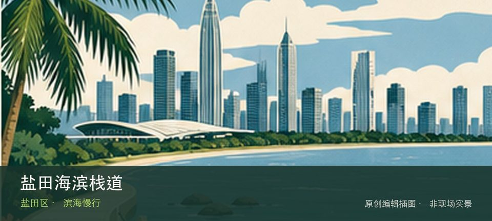
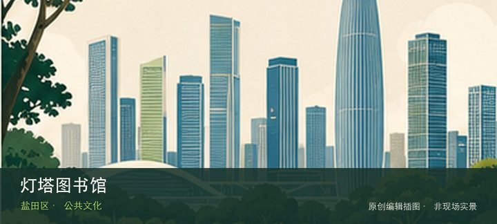

适合谁
适合海岸观察、轻量步行和愿意服从海况边界的人；不适合追逐未开放穿越线。

SHENZHEN GUIDE · 101
沙头角至大小梅沙 · 滨海慢行
盐田海滨栈道位于沙头角至大小梅沙沿岸，长海岸由多个开放状况不同的栈道与公园段组成，修复、潮浪和工程会让旧攻略中的连续路线失效。这里不是只有一个打卡点：沙头角城市海岸段提供主要线索，盐田港观景段补足另一层现场关系。海岸体验取决于沙头角城市海岸段与盐田港观景段当天的风浪、潮位和运营边界，不宜把旧照片当成实时承诺。先确定安全退路和返程节点，遇雷雨、台风影响或封闭提示就缩短行程。
WHY GO
适合海岸观察、轻量步行和愿意服从海况边界的人；不适合追逐未开放穿越线。
先从官方公告确认目标段开放，只选择一个交通清楚的往返段；遇封闭围挡立即折返，不绕行礁岸或车道。
公共交通先到沙头角至大小梅沙沿岸片区，再以盐田海滨栈道公开参观入口为终点；多入口地点须按计划游线选择入口，并预先锁定返程站点。
按所选栈道分段寻找邻近正规公共停车场，不能用终点名称替代入口；节假日优先地铁公交，满位不沿海边占道。
10 月至次年 4 月体感较舒适；夏季亲水先查海况，雷暴、台风影响或大浪提示下不靠近水线。
NEARBY IDEAS

编辑配图·非现场实景灯塔图书馆位于海景公园与中央公园之间，白色灯塔外形、海景阅读空间和公园水岸使它成为小体量公共文化节点，座位与开放时段决定体验。
 编辑配图·非现场实景
编辑配图·非现场实景
盐田中央公园位于海山街道，大章鱼装置、草坪、灯塔图书馆和港口背景组成亲子友好的城市海滨客厅，尺度适合一至两小时。
 编辑配图·非现场实景
编辑配图·非现场实景
海山公园位于海山社区，彩色构筑、山腰平台和社区入口在较短爬升中打开盐田港与梧桐山方向视野，比海滩更贴近日常生活。